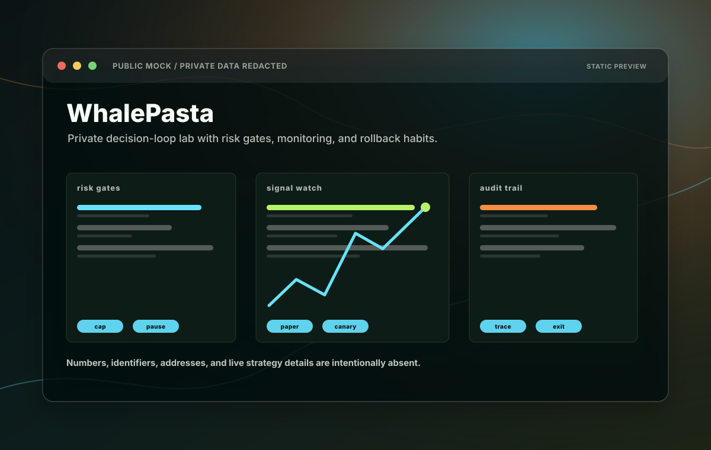

EstimateEngine
Messy field inputs into reviewable work.
Proof of capability: structured intake, material interpretation, review gates, and handoff packets where automation supports human judgement instead of pretending to replace it.
Mad scientist for good, incorporated in Montana.
A small project portfolio company for worker support, useful civic-minded systems, and serious collaboration without the circus smoke.
Our Mission: 1. Support our workers. 2. Make the world world incrementally for average citizens. 3. Collaborate on fun projects. (In that order.)
Business operations, not project management theater.
The public view here is intentionally limited. It shows the shape of the work and the operating standards we care about: human review, source discipline, reversible decisions, useful automation, and enough taste to avoid making everything feel like a dashboard made during a power outage.
Limited project view
These public-safe mockups are sanitized on purpose. The real systems contain private operational data, credentials, addresses, customer/vendor context, and strategy details that do not belong on a brochure page.

EstimateEngine
Proof of capability: structured intake, material interpretation, review gates, and handoff packets where automation supports human judgement instead of pretending to replace it.

WhalePasta
Proof of capability: monitored experiments, contained canaries, audit trails, operator controls, and a habit of treating unexplained variance as a problem to understand before scaling.
CTRL
Proof of capability: private review workflows, approvals, runbooks, maintenance paths, and interfaces built around accountability rather than decorative complexity.
TelemetryBase
Proof of capability: governed knowledge, source references, reusable skills, permissions, and project context that makes future work less fragile.
CivDex
Proof of capability: careful civic data boundaries, source-backed records, practical routing ideas, and respect for the difference between public information and reckless exposure.
Our AI stance
We use AI where it helps produce better work: research, drafting, interfaces, quality checks, automation, and memory. We do not treat AI usage as a substitute for creativity, humanity, ethics, taste, or results.
The values order matters. Workers first. Average citizens next. Fun projects after that. The point is not to look futuristic. The point is to build things that hold up when people actually use them.
Collaboration venue
Send a concise note with who you are, what you are trying to make better, and what kind of collaboration would be useful. We expect negligible traffic, so an email is enough.
olivia@allsystemsgreen.ioDisclosures
This site is general information about AllSystemsGreen.io, LLC. It is not an offer, solicitation, guarantee, client engagement, employment promise, investment pitch, or professional advice.
Nothing here is financial, trading, legal, tax, security, medical, or other professional advice. Project descriptions are intentionally vague and may omit sensitive operating details.
Public visuals are sanitized mockups. They should not be treated as live system output, customer data, production credentials, financial results, or complete technical documentation.
Static pages reduce attack surface, but no website is hackproof. Security researchers should review the responsible disclosure notes before testing anything.